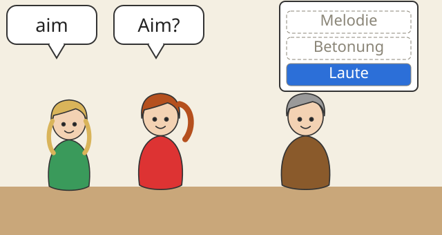

Lautschrift lesen
Mit einem KI-Tutor lernen
Ein KI-Tutor erklärt dir diese Seite und hilft dir bei den Aufgaben. Wähl deinen Assistenten:
Mit Claude öffnen Mit ChatGPT öffnen Mit Mistral Vibe öffnen
Du nutzt dein eigenes Konto beim Anbieter. Der Assistent ist kein Angebot von lernapps.net: lernapps liefert nur Inhalte und Aufgaben. Die Wahl gilt für alle Seiten, nur auf diesem Gerät.
Sophie liest laut

Von links: Sophie (Zöpfe) liest laut, Ellie (roter Pferdeschwanz) wundert sich, rechts steht Mr Hill (graue Haare) an der Klangpartitur.
Quelle: eigene Zeichnung. Lizenz: CC-BY-4.0.Mr Hill hat eine Klangpartitur aufgehängt: eine Tafel mit drei Zeilen. Später tragen die Kinder dort Laute, Betonung und Melodie ein. Sophie liest den Ausdruck I'm („ich bin“) aus Hello, Millbrook! mit ihrer Lesehilfe vor: „aim“. Das ist die Aussprache in deutschen Buchstaben. Ellie sagt: „Aim ist ein englisches Wort. Ich spreche I'm anders aus.“
Aufgabe
Lösung
Sie nutzt deutsche Buchstaben und ist darum ungenau. richtige Antwort
Die Lesehilfe geht vom Deutschen aus. „Aim“ ist für Ellie ein anderes Wort.
Sie nutzt deutsche Buchstaben, und Ellie hört falsch.
Ellie hört richtig. Aim ist im Englischen ein anderes Wort.
Sie nutzt englische Buchstaben, und Ellie spricht falsch.
Ellie ist Engländerin. Für sie klingt „aim“ nicht nach I'm.
Im Englischen gibt es das Wort aim (Ziel). In Lautschrift steht I'm als /aɪm/ und aim als /eɪm/. Eine Lesehilfe mit deutschen Buchstaben zeigt den Klang nur ungefähr.
Das kannst du danach: Du liest die wichtigsten Zeichen der Lautschrift und findest so heraus, wie ein neues Wort klingt.
Ein Zeichen für jeden Laut
Die Lautschrift schreibt jeden Laut mit einem eigenen Zeichen auf, zwischen Schrägstrichen: /ʃ/. Sie ist für alle gleich, auch für englische Kinder. Jede Zeile der Tabelle ist eine Lautkarte: ein Zeichen mit einem Beispielwort. In der unteren Zeile der Klangpartitur stehen ganze Wörter in Lautschrift, jedes auf einer blauen Karte. Die gestrichelten Zeilen füllen wir später. Auf den Karten stehen die Zeichen ohne Schrägstriche.

Zwei Wörter, zwei Karten: Auf der Karte steht der Klang, darunter die Schreibung.
Quelle: eigene Zeichnung. Lizenz: CC-BY-4.0.| Zeichen | Beispielwort | So klingt es ungefähr |
|---|---|---|
| /ʃ/ | shoe | „sch“ wie in Schuh |
| /tʃ/ | chair | „tsch“ wie in Matsch |
| /ŋ/ | sing | „ng“ wie in Ring |
| /iː/ | green | langes „i“ wie in Biene |
| /ɪ/ | big | kurzes „i“ wie in Bitte |
| /æ/ | cat | zwischen „a“ und „ä“ |
| /ɑː/ | car | langes „a“ wie in Bahn |
| /ʊ/ | book | kurzes „u“ wie in Mutter (nicht lang) |
Merke
- Ein Zeichen, ein Laut. Ein Buchstabe kann verschieden klingen (c in cat und in city), aber ein Zeichen steht immer für denselben Laut.
- Das Zeichen ː sieht aus wie ein Doppelpunkt und macht einen Laut lang.
- Viele Zeichen sehen aus wie Buchstaben und klingen wie im Deutschen: /b/, /d/, /f/, /h/, /k/, /l/, /m/, /n/, /p/, /s/, /t/. Auch /ɡ/ klingt wie das g in Garten.
Aufgabe
Höre vier Sätze und sprich sie nach. In jedem steckt ein Wort aus der Tabelle: shoe, chair, sing, cat.
Tipp
Die Aufnahme ist eine KI-Stimme und spricht manchmal unscharf. Frag im Zweifel deine Lehrkraft.
- Sophie has a new shoe today.KI
- Ellie has a red chair again.KI
- Peter likes to sing together.KI
- Peter has a black cat upstairs.KI
Zum Aufnehmen braucht diese Aufgabe JavaScript. Die Beispiele kannst du auch ohne anhören.
Lösung
- Sophie has a new shoe today.
- Ellie has a red chair again.
- Peter likes to sing together.
- Peter has a black cat upstairs.
Übung
Aufgabe
Lösung
Richtige Antwort: /ʃ/ – fish; /tʃ/ – lunch; /ŋ/ – song; /iː/ – tea; /ɑː/ – park
Suche den Laut, nicht den Buchstaben: sh und ch sind je ein Laut.
Aufgabe
Lösung
/tʃ/ richtige Antwort
Das ch in chicken ist ein einziger Laut: /tʃ/, wie „tsch“ in Matsch.
/ʃ/
Das ist der Laut in shoe. Bei chicken kommt ein t davor: /tʃ/.
/k/
In chicken ergeben ch zusammen /tʃ/.
Zwei Buchstaben können einen einzigen Laut ergeben.
Aufgabe
Lösung
Richtige Antwort: 3
/fɪʃ/ hat drei Zeichen, fish vier Buchstaben.
Aufgabe
Schreibe das Wort, das in Lautschrift steht.
Tipp
Sprich die Zeichen nacheinander.
- /bæɡ/
- /hæt/
- /mɪlk/
Lösung
- bag
- hat
- milk
Aufgabe
Höre zu und schreibe jeden Satz ganz auf.
Tipp
Höre den Satz so oft, wie du willst. Schreibe jedes Wort auf, das du verstehst.
- KI
- KI
- KI
Lösung
- Amir buys a new watch today.
- Sophie washes the dishes this evening.
- Peter takes a long walk this morning.
Sprich nach
Aufgabe
Höre den Satz und nimm dich auf. Höre dich an und bewerte dich selbst. Die App hört nicht zu.
Tipp
Sprich langsam. Achte auf die Laute, die du heute gelernt hast.
- Sophie and Peter eat cheese together.KI
- Amir has a chair in the kitchen.KI
- Ellie has a fish and a green apple.KI
Zum Aufnehmen braucht diese Aufgabe JavaScript. Die Beispiele kannst du auch ohne anhören.
Lösung
- Sophie and Peter eat cheese together.
- Amir has a chair in the kitchen.
- Ellie has a fish and a green apple.
Wie es weitergeht
Peter zeigt Mr Hill ein Foto. Mr Hill fragt etwas, und ein einziger Laut entscheidet. Mr Hill sagt: „Ein kleiner Laut macht aus einem Wort ein anderes.“ Welche Laute das sind und wie du sie unterscheidest, lernst du auf der nächsten Seite.